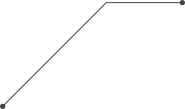
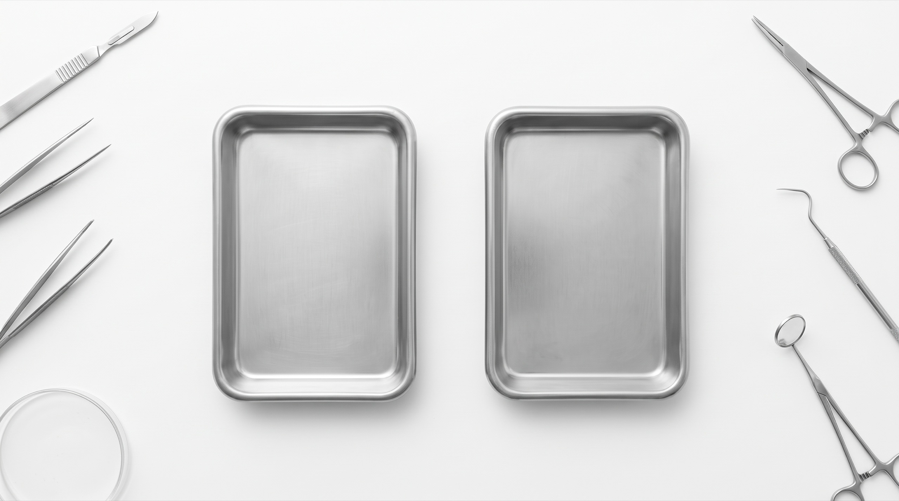
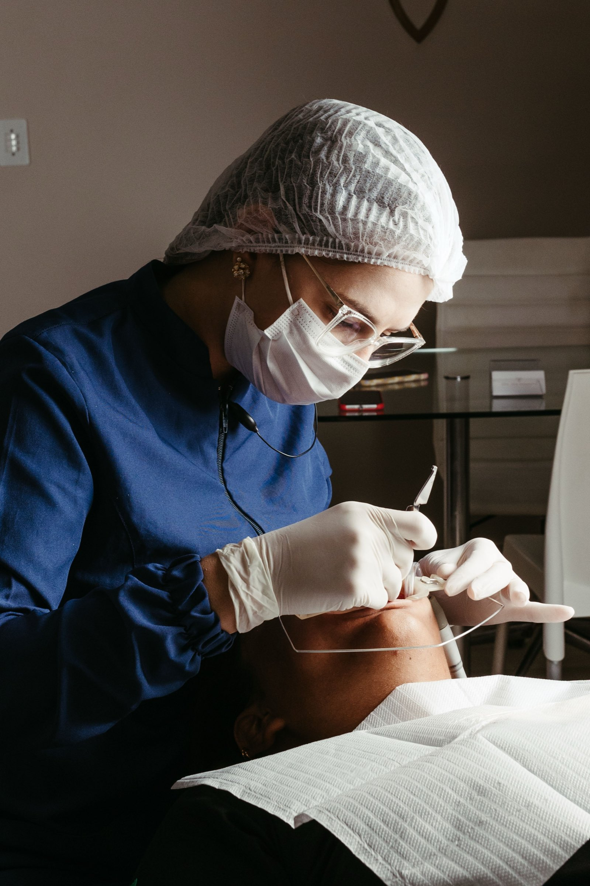

Every case planned
by an experienced doctor
You keep the patient and the fee. We deliver a signed plan in 48 hours,
aligners in 10 days, and qualified patients to your chair.
What we solve
Your aligner is thinnest
where you need it thickest
Thermoforming stretches the sheet over cusps and incisal edges.
That’s where the force is meant to land.

thinnest over cusps and incisal edges

Two choices. Made per case.
How you plan
CoDesign
Plan alongside an experienced doctor.
Prescribe
Submit intent, an experienced doctor executes it.
Which appliance
Thickness designed per tooth.
Form
Thermoformed Zendura.

Dential fills your chair, too
You don’t just get a lab. Our patient campaigns generate qualified demand and refer it to VARIFIT practices.
Qualified patients, referred to you!
Dential runs the patient side, campaigns, the patient site and the 2-minute smile check.
Patients who qualify are routed to a VARIFIT practice near them: yours.
Pre-qualified, pre-educated
Every referral arrives scored by the assessment and already understands aligner treatment.
You stay the doctor
You fee, your patient, your chair. We never contact patients directly once referred.
Thickness
as a design variable
On every case
A written plan
The reasoning written out, not just a file to approve.
Direct messaging with your planner
Ask the doctor who planned the case, inside the case.
Trimline, material, template, your call
Set your defaults once, override them case by case.
Monitoring, proposals, consent,
included, with Luma free
The whole patient-facing workflow, at no extra cost.
A Force map on every printed case
The intended force per tooth, stage by stage, before the patient wears it.
See the patient experience